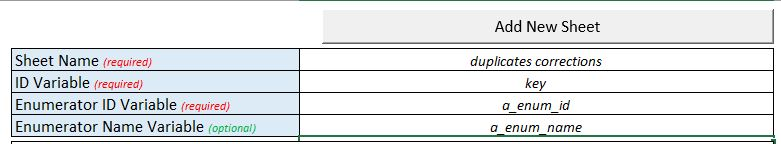

Guide to IPA’s Data Management System
Learn to set up and use IPA’s Data Management System for comprehensive data quality monitoring. This hands-on guide walks you through configuring high-frequency checks, tracking survey progress, and conducting back check comparisons using the ipacheck package in Stata. You’ll work with real survey data to practice identifying outliers, duplicates, and logical inconsistencies while building automated quality control workflows.
This guide provides hands-on exercises to help you master IPA’s Data Management System tools in Stata. You’ll learn to set up and run three key components: High-Frequency Checks, Survey Tracking, and Back Check comparison.
What You’ll Learn
- Install and configure the
ipacheckpackage - Set up automated data quality checks for survey data
- Track survey progress and identify missing submissions
- Compare survey responses with back check data
- Generate reports for field teams and data managers
Prerequisites
- Stata 17.0 or later
- Basic familiarity with Stata commands and do-files
- Understanding of survey data collection workflows
- Access to Excel for configuration files
Installation
The ipacheck package bundles user-written Stata commands for running high-frequency checks at IPA. Install the package by opening Stata and running:
* install ipacheck
net install ipacheck, all replace from("https://raw.githubusercontent.com/PovertyAction/high-frequency-checks/master")
ipacheck update
* after initial installation ipacheck can be updated at any time via
ipacheck updateExercise Overview
This exercise demonstrates how to use the ipacheck package with real survey data from a previous IPA project. The dataset includes:
- A simple household survey collected using SurveyCTO
- De-identified data with all PII removed
- Anonymized GPS coordinates
- Both survey and back check datasets for comparison
Instructions
Section 1: Package Overview
To download the exercise, start by using the ipacheck command. This will initialize a folder structure, readme files, all the input sheets, and the data for the exercise:
* To download the exercise folder and files to current directory
ipacheck new, exercise
* To download the exercise folder and files to a different directory, use the folder option as follows
ipacheck new, exercise folder("folder path here")The program may take longer to fetch files with slow internet connections.
There are also a few additional utility functions included in the ipacheck package including:
ipacheck update- downloads the updated ado files directly from GitHub whenever IPA HQ releases an update so you don’t have to go through the above Installation process again.ipacheck version- lists the current installed versions of the user-written commands to verify you have the latest version.
After downloading the exercise files, navigate to the proper directory and examine the HFC files. Start with the 3_checks/1_inputs folder, which contains these files:
hfc_inputs.xlsm- input Excel file; inside you’ll find a convenient form for configuring some of the HFC commands.corrections.xlsm- replacement Excel file; it is a running list of edits/corrections based on HFC outputs; these replacements can be automatically added to your workflow usingipacheckcorrections.specifyrecode.xlsm- other specify input Excel file; it is a running list instruction for recoding other specify values; these instructions will be automatically added to your workflow usingipacheckspecifyrecode.
Now go back to the main folders.
0_master.do- master dofile; it runs all other do-files 2_dofiles folder
Now navigate to 2_dofiles.
1_globals.do- globals do-file; it contains globals for setting up the Data Management System.3_prepsurvey.do- data preparation do-file; it contains sample code for preparing the raw Survey data for High-Frequency Checks (HFCs).4_checksurvey.do- HFC do-file; it contains code for running checks on the Survey dataset.5_prepbc.do- data preparation do-file; it contains sample code for preparing the raw Back Check data for Back Check Comparison (HFCs).6_checkbc.do- Back Check do-file; it contains code for running checks on the back check dataset as well as running the back check comparison.
Section 2: Configure Main Inputs
This section walks you through setting up your DMS configuration.
Open the Globals File
Navigate to the 2_dofiles folder and open the 1_globals.do file. This file configures the High-Frequency Checks. Each section includes descriptions for each global variable. Some globals contain default values that you may need to modify.
Configure the following sections:
Run/Turn Off Specific Checks
Set the value “1” for each check you want to run. The value “1” tells Stata to run and configure that check. To turn off a specific check, change the corresponding global value to 0. This exercise runs almost all available checks, so activate all checks as shown in the code below.
**# Run/Turn Off Specific Checks
*------------------------------------------------------------------------------*
* NB: Edit this section: Change the value to 0 to turn off specific checks
gl run_corrections 1 // Apply corrections
gl run_specifyrecode 1 // Recode other specify
gl run_version 1 // Check for outdated survey form versions
gl run_ids 1 // Check Survey ID for duplicates
gl run_dups 1 // Check other Survey variables for duplicates
gl run_missing 1 // Check variable missingness
gl run_outlier 1 // Check numeric variables for outliers
gl run_constraints 1 // Check numeric variables for constraint violations
gl run_logic 1 // Check variables for logical violations
gl run_specify 1 // Check for other specify values
gl run_comments 1 // Collate and output field comments
gl run_textaudit 1 // Check Survey duration using text audit data
gl run_timeuse 1 // Check active survey hours using text audit data
gl run_surveydb 1 // Create survey Dashboard
gl run_enumdb 1 // Create enumerator Dashboard
gl run_tracksurvey 1 // Report on survey progress
gl run_trackbc 0 // Report on Back check progress
gl run_bc 1 // Back Check comparisonInput Files
This section specifies file paths for the hfc_inputs, corrections, and recode specify input files. The default values are correct for this exercise, so no changes are needed.
Datasets
This section specifies file paths and filenames for input datasets required by various commands, including:
- Raw, prepped and de-duplicated survey datasets
- Back check datasets
- Collated field comments and text audit datasets
The default values for rawsurvey, preppedsurvey, checkedsurvey, rawbc, preppedbc and checkedbc are correct for this exercise.
You will be configuring the ipatracksurveys command using a master dataset which has information for each target respondent. Navigate to the 4_data/2_survey folder and examine the household_preloads.xlsx file. This file will be used as the master dataset when comparing the surveys submitted to the individuals to be interviewed. After viewing this file, go back to the 1_globals.do file and indicate the value "${cwd}/4_data/2_survey/household_preloads.xlsx" for the global mastersurvey. Note that the master data can also be a dta or csv file.
trackingsurvey is an alternative to mastersurvey. However, trackingsurvey expects a dataset than contains targets for specified groups. eg. community, district, treatment_status. It is more suitable for census-type surveys when we don’t have a pre-selected list of respondents. Explore the dataset respondent_targets.xlsx in 4_data/2_survey to see an example of a trackingsurvey dataset.
Ignore the masterbc & trackingbc globals for now. When will configure those when reviewing the back check sections.
Now configure the commentsdata and textauditdata global by yourself. Note that these files currently do not exist and will be created when you run your DMS. It is recommended to set the file path for these files to "${cwd}/4_data/2_survey". Also, ensure to use file names that will be easier to identify later on.
Compare your do-file to the code below and make any adjustments if necessary.
* Datasets
*------------------------------------------------------------------------------*
* NB: Edit this section: Change filenames if necessary
gl rawsurvey "${cwd}/4_data/2_survey/household_survey.dta"
gl preppedsurvey "${cwd}/4_data/2_survey/household_survey_prepped.dta"
gl checkedsurvey "${cwd}/4_data/2_survey/household_survey_checked.dta"
gl mastersurvey "${cwd}/4_data/2_survey/household_preloads.xlsx"
gl trackingsurvey ""
gl rawbc "${cwd}/4_data/3_backcheck/household_backcheck.dta"
gl preppedbc "${cwd}/4_data/3_backcheck/household_backcheck_prepped.dta"
gl checkedbc "${cwd}/4_data/3_backcheck/household_backcheck_checked.dta"
gl masterbc "${cwd}/4_data/3_backcheck/household_backcheck_preloads.xlsx"
gl trackingbc ""
gl commentsdata "${cwd}/4_data/2_survey/comments_data.dta"
gl textauditdata "${cwd}/4_data/2_survey/textaudit_data.dta"SurveyCTO media folder
This section specifies the folder that contains the SurveyCTO generated comments and text audits files. You do not need to make changes here since the default values are correct for this exercise.
Output Date Folder
This section creates a subfolder in 3_checks/2_outputs for the current date that the DMS is running. This section should never be edited.
Output files
This section specifies the output files from the various checks. The output files include the duplicates, corrections, recode specify, hfc, text audit, timeuse, survey dashboard, enumerator dashboard and survey tracking outputs. You do not need to make changes here since the default values are correct for this exercise.
Admin variables
This section specifies the global administrative variables for the DMS. These are variables that are used in various sections of the DMS. These include the key, survey id, enumerator, date, team, starttime, duration, form version, field comments, text audit, consent and outcome variables as well as variables to keep in all checks. The default variables specified for some of the globals are correct for this check, however, we need to configure the remaining additional checks as follows.
* Admin variables
*------------------------------------------------------------------------------*
* NB: Edit this section: Change variable names if necessary.
* Required Variables:
gl key "key"
gl id "hhid"
gl enum "a_enum_id"
gl enumteam "a_team_id"
gl bcer "a_bcer_id"
gl bcerteam "a_team_id"
gl date "starttime"
* Optional Variables:
gl team "a_team_name"
gl starttime "starttime"
gl duration "duration"
gl formversion "formdef_version"
gl fieldcomments "field_comments"
gl textaudit "text_audit"
gl keepvars "a_kg a_district"
gl consent "c_consent"
gl outcome ""The survey has no outcome variable so we will leave the outcome global blank.
Response values
This section specifies values that represent specified response values in the survey. You will be making some adjustments to this section to reflect the dataset. The values for cons_vals are correct and should not be modified. However, you remember from the previous section that the survey does not include an outcome variable, therefore set the value for the outc_vals global to empty ie. "".
After reviewing the data, we realize that the survey programming allowed the values -999, 999 and .999 as don;t know values for numeric variables and -888, 888 and .888 as “refuse to answer” values for numeric variables.
To account for this, modify the values of the dk_num and ref_num globals as follows:
* Missing values
*------------------------------------------------------------------------------*
* NB: Edit this section: Change values if necessary.
gl cons_vals "1"
gl outc_vals "1"
gl dk_num "-999 999 .999"
gl dk_str "-999"
gl ref_num "-888 888 .888"
gl ref_str "-888"Section 3: Configure additional inputs
The second half of 1_globals.do specify settings that are peculiar to individual checks in the DMS. Review the remaining sections carefully. Note that for many of these sections, you will not need to make any additional changes. After review, make changes to the following sections:
ipacheckdups: Export variable duplicates
Set the value of the global dp_vars as "resp_contact" to flag duplicates in phone numbers.
ipachecksurveydb: Export Survey Dashboard
Set the value of the global sv_by as "a_district" to disaggregate the survey dashboard by the values of the a_district variable.
ipatracksurvey: Export tracking sheet
Set the values of the following globals as follows:
* ipatracksurvey: Export tracking sheet
*------------------------------------------------------------------------------*
gl tr_by "a_kg"
gl tr_target ""
gl tr_keepmaster "a_district"
gl tr_keeptracking ""
gl tr_keepsurvey "submissiondate c_consent"
gl tr_summaryonly ""
gl tr_workbooks "workbooks"
gl tr_save ""
gl tr_surveyok "surveyok"Save the 1_globals.do file.
Navigate to the 3_checks/1_inputs folder and open the hfc_inputs.xlsm file in Excel. This is where you’ll do the additional configuration for the ipacheckoutliers, ipacheckconstraints, ipachecklogic, ipacheckspecify and enumstats for ipacheckenumdb.
Explore the dataset 4_data/2_survey/household_survey.dta and identify the variables for the following sheets:
other specify
The “other specify” sheet specifies the parent and child variables for other specify responses. Explore the household dataset and identify the parent and child variables. The parent variables are the control variables which trigger the other specify question. Note that all the child variables in this dataset include _osp in their variable names.
Upon completion, navigate to 0_archive and open the file hfc_inputs_exercise.xlsm and compare your work with the sheet "other specify".
outliers
The “outliers” sheet specifies the numeric variables to check for outliers. These are usually numeric variables that are not constrained or have a wide constraint range. Review the help file for ipacheckoutliers to understand what is required for by, method, multiplier, combine and the keep columns.
Upon completion, navigate to 0_archive and open the file hfc_inputs_exercise.xlsm and compare your work with the sheet "outliers".
constraints
The constraints sheet specifies the numeric variables to check for constraint violations. These are usually numeric variables which you want to check for soft constraints. Review the help file for ipacheckconstraints to understand what is required for hard_min, soft_min, soft_max, hard_max and the keep columns.
Upon completion, navigate to 0_archive and open the file hfc_inputs_exercise.xlsm and compare your work with the sheet "constraints".
logic
The logic sheet specifies the variables to check for logical inconsistencies in survey variables. ipachecklogic checks for logic violations using logical statements as indicated in the assert column of the input sheet. Review the help file for ipachecklogic to understand what is required for assert, if_condition and the keep columns.
The scope of this exercise does not cover the ipachecklogic so you are free to exclude it from this exercise. You may also read the help file for ipachecklogic for examples of how to use this check.
enumstats
The enumstats sheet specifies the variables and additional setup for the enumstats option of ipacheckenumdb. The variables specified are usually numeric variables for which we want to check for variations among enumerators. For instance, we may want to examine how enumerators are reporting household member counts or total household income. Review the help file for ipacheckenumdb to understand what is required for the columns min, mean, show_mean_as, median, sd, max and combine. Please note that for this section, there is no single correct or wrong answer, however, to help guide the exercise complete the enumstats sheet as follows:
enumstats sheet
| variable | label | min | mean | show_mean_as | median | sd | max | combine |
|---|---|---|---|---|---|---|---|---|
| gpsaccuracy | GPS Accuracy | yes | yes | yes | ||||
| f_hhm_cnt | (FA2) Based on the definition that I just read to you, how many members are in y | yes | yes | yes | yes | |||
| i_phone_num | (I01) How many household members own a working mobile phone? | yes | yes | yes | ||||
| j_land_yn | (J01) Does your household own any land? | yes | percentage | |||||
| k_own_yn | (K01) Does your household own any livestock? | yes | percentage |
You may also include other variables that you find useful.
Save the hfc_inputs.xlsm file
Navigate back to 2_dofiles folder and open up the 3_prepsurvey.do file. This do-file contains sections of sample codes that may be needed to prepare your data before running the checks. These include dropping variables, destringing variables, generating a short key if needed, generating date variables from default datetime variables and dropping observations that were started before specified dates.
Review this do-file carefully and make edits where necessary.
The data includes temporary variables that were added for SurveyCTO programming purposes only and therefore do not contain any useful information. Luckily these variables are prefixed by tmp_. Drop these variables by adding tmp_* to the list of variables to drop in the “drop unwanted variables” section.
The data also contains “calculate fields” that were imported as strings instead of numeric variables. Include *_yn* to the “destring numeric” variables sections to destring all variables that have the `_yn’ in their variable names. Explore the data and include more variables to destring.
Save the 3_prepsurvey.do file.
Section 4: Run and Review the Output
Navigate back to the main folder and open the 0_master.do file. Before running your checks, make sure that your current working directory is the directory that contains 0_master.do file.
Comment out the section of the code that runs the import do-file, the back check prep and the back check comparison.
**# Survey 1
*------------------------------------------------------------------------------*
do "2_dofiles/1_globals.do" // globals do-file
* do "2_dofiles/2_import_wbnp_hhs_2021.do" // import do-file
do "2_dofiles/3_prepsurvey.do" // prep survey do-file
do "2_dofiles/4_checksurvey.do" // check survey do-file
* do "2_dofiles/5_prepbc.do" // prep back check do-file
* do "2_dofiles/6_checkbc.do" // check survey do-fileRun the entire do file.
After running the do-file, you should get the following error:
worksheet duplicates corrections not foundTo resolve this error, we need to set-up the correction sheet. Navigate to 3_checks\1_inputs and open the file corrections.xlsm. Read the instructions and create 2 correction sheets on this workbook using the following information:
correction sheet for duplicates

The SurveyCTO generated key variable or another type of key variable should be used as ID when resolving duplicates. Although you can use the key and hence the same sheet to resolve other duplicates, it is recommended to create a separate sheet using the Survey ID since that will facilitate communication when resolving these issues.
correction sheet for other issues
Run the 0_master.do again. Once it runs successfully, you should have a list of output files in the date subfolder the in 3_checks/2_outputs folder. Open each file and inspect its content.
Navigate to the 04_checks/02_outputs folder and open the various output files and answer the following questions:
- How many interviews have been conducted?
- Are we missing any submissions that we planned?
- Is everyone using the latest form version?
- How many Survey ID duplicates are there in the dataset?
- How many variables have all missing values that shouldn’t be missing?
- How many outliers are flagged? Do any values appear to be nonsensical? What should be done?
- Do you see any specify options that could be recoded?
- Which 3 enumerators have the lowest survey productivity scores.
- Which 5 enumerators have the highest “don’t know” response rate
- Are there any useful comments? What should be done?
- What time period during the day are the enumerators most active on the field.
Section 5: Make Replacements & Recode Other Specify
Try adding some corrections yourself using the instructions in corrections.xlsm that was set-up earlier. Navigate to 0_archive and open the corrections_exercise.xlsm for guidance on how to make some of the corrections.
Re-run the DMS to effect the corrections. Review the corrections logfile in 3_checks/2_outputs to verify that the changes were effected.
Navigate to 3_checks/2_outputs to inspect the new output files. Review the hfc_output file and include your corrections in the corrections.xlsm file.
Other specify recodes cannot be done in the corrections.xlsm file and must be done in the specifyrecode.xlsm file.
Open the specifyrecode.xlsm file (in 3_checks/1_inputs folder). Read the Stata help file for ipacheckspecifyrecode to understand how to use the specifyrecode.xlsm file.
Navigate to 0_archive and open the specifyrecode_exercise.xlsm for guidance on how to recode other specify values.
Re-run the DMS to effect the recodes. Review the other specify recode logfile in 3_checks/2_outputs to verify that the changes were effected.
Section 6: Set-up back check comparison
Navigate back to 2_dofiles folder and open up the 5_prepbc.do file. This do-file contains sections of sample codes that may be needed to prepare your back check dataset as well as running back check comparison. Before we edit this do-file, open the 0_globals.do file and make the following changes to the section titled ipabcstats: Compare survey and back check data
*ipabcstats: Compare survey and back check data
*----------------------------------------------
* Comparison variables
* --------------------
gl bs_t1vars "e_hhh_relig e_hhh_native e_hhh_howlong h_rooms h_electricity h_cook_fuel h_toilet i_radio i_mosquito_net j_land_yn "
gl bs_t2vars "f_hhm_cnt"
gl bs_t3vars "j_land_size j_land_value m_mon_exp m_mon_inc"
* Enumerator Checks
* -----------------
gl bs_showid "30%"
* Stability Checks
* ----------------
gl bs_ttest "f_hhm_cnt j_land_size j_land_value m_mon_exp m_mon_inc"
gl bs_prtest ""
gl bs_signrank ""
gl bs_level "95"
* Reliability Checks
* ------------------
gl bs_reliability "j_land_size j_land_value m_mon_exp m_mon_inc"
* Comparison datasets
* -------------------
gl bs_keepsurvey ""
gl bs_keepbc ""
gl bs_full ""
gl bs_nolabel "nolabel"
gl bs_dta ""
* Options
* -------
gl bs_okrange "e_hhh_howlong[-1, 1], j_land_size[-5%, 5%], j_land_value [-5%, 5%], m_mon_exp [-10%, 10%], m_mon_inc [-10%, 10%]"
gl bs_nodiffnum ""
gl bs_nodiffstr ""
gl bs_excludenum "${dk_num} ${ref_num}"
gl bs_excludestr "${dk_str} ${ref_str}"
gl bs_exclusemissing "excludemissing"
gl bs_lower "lower"
gl bs_upper ""
gl bs_nosymbol "nosymbol"
gl bs_trim "trim"Navigate back to 2_dofiles folder and open up the 3_prepbc.do file. This do-file contains sections of sample codes that may be needed to prepare your back check data before comparison. These include dropping variables, destringing variables, generating a short key if needed, generating date variables from default datetime variables and dropping observations that were started before specified dates.
Review this do-file and make any changes that are necessary.
Navigate to 3_checks/1_inputs and re-open the corrections.xlsm file. Add a new sheet bc duplicates corrections using a_bcer_id as the Enumerator “ID Variable (required)” and key as the “ID Variable (required)”.
Re-activate the section of the code that runs the import do-file, the back check prep and the back check comparison.
**# Survey 1
*------------------------------------------------------------------------------*
do "2_dofiles/1_globals.do" // globals do-file
do "2_dofiles/2_import_wbnp_hhs_2021.do" // import do-file
do "2_dofiles/3_prepsurvey.do" // prep survey do-file
do "2_dofiles/4_checksurvey.do" // check survey do-file
do "2_dofiles/5_prepbc.do" // prep back check do-file
do "2_dofiles/6_checkbc.do" // check survey do-fileRe-run the 0_master.do file again and review the output.